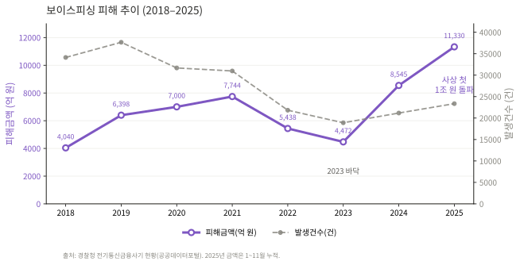
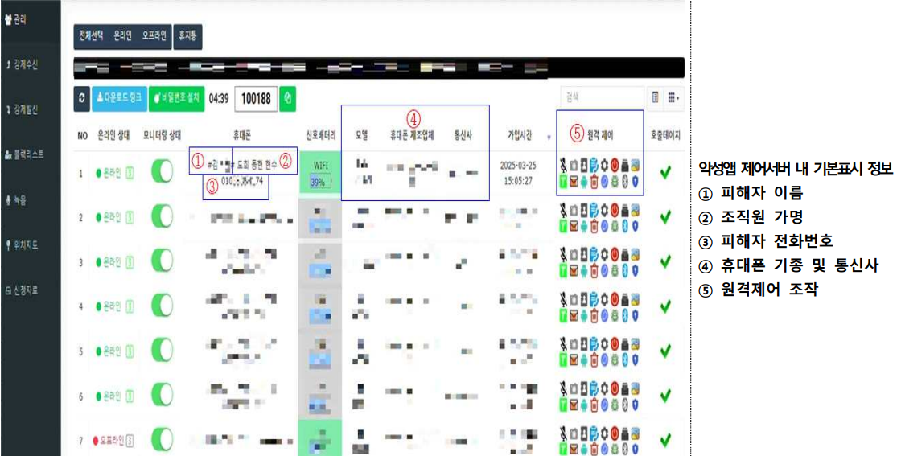

보이스피싱
한눈에 보기
검찰·금융사를 사칭해 심리를 지배하고, 수사 협조나 저금리 대출을 미끼로 악성 앱 설치를 유도한다. 과거의 '전화 사기'가 이제는 원격제어·전화 가로채기가 결합된 모바일 단말 장악 범죄로 진화했다.
1. 공격 유형 설명 및 정의
보이스피싱은 전기통신수단을 이용해 타인을 기망·공갈하여 자금을 이체·출금하게 하거나 개인정보를 탈취하는 전기통신금융사기의 한 유형이다(통신사기피해환급법 제2조). 과거에는 전화 통화만으로 이루어졌으나, 최근에는 악성 앱 설치를 기점으로 원격제어·전화 가로채기·정보 탈취가 결합된 모바일 기반 복합 범죄로 진화했다.
| 유형 | 정의 / 수법 | 모바일 연계 요소 |
|---|---|---|
| 기관사칭형 | 검찰·경찰·금융감독원 등을 사칭, "계좌가 범죄에 연루됐다"며 자산보호·수사협조 명목으로 이체·앱 설치 유도 | 원격제어 앱, 가짜 검찰청/금감원 앱 |
| 대출빙자형 | 저금리 대환대출·정부지원대출을 미끼로 수수료·보증금·기존대출 상환금 편취 | 가짜 금융사 앱, 대출 심사 명목 악성 앱 |
| 지인사칭형(메신저피싱) | 카카오톡 등에서 가족·지인 사칭, "폰 고장·인증 요청" 등으로 상품권/이체 요구 | 메신저 계정 탈취, 원격 인증 유도 |
| 미끼문자 연계형 | 택배·부고·과태료 등 미끼문자 내 악성 URL로 악성 앱 설치 유도 후 보이스피싱으로 연결 | 스미싱 → 악성 앱 설치 → 보이스피싱 결합 |
최근 추세 — 기관사칭형의 급증
2025년 기관사칭형 발생건수는 13,323건으로 역대 최고치를 기록하며 대출사기형(10,037건)을 추월했다. 전체 범죄의 중심축이 대출빙자형에서 기관사칭형으로 이동했다. (경찰청, 공공데이터포털)
2. 실제 피해 현황
2.1 피해 추이

출처: 경찰청, 「전기통신금융사기 발생 및 검거 현황」, 공공데이터포털 (2025년 금액은 1~11월 누적)
건수는 2019년을 정점으로 줄었지만 피해액은 2023년 바닥을 찍고 급반등해 2025년 사상 첫 연간 1조 원을 넘었다. 건당 평균 피해액이 2024년 약 2,500만 원에서 2025년 약 5,300만 원으로 2배 이상 뛴 결과로, 악성 앱으로 단말을 통째로 장악하는 '탈탈 털기식' 범행이 늘며 공격의 중심이 모바일 단말 장악으로 재편되었음을 보여준다.
| 연도 | 피해금액 | 발생건수 | 주요 특징 |
|---|---|---|---|
| 2018 | 4,040억 원 | 34,132건 | 계좌이체형 급증 진입 |
| 2019 | 6,398억 원 | 37,667건 | 발생건수 역대 최고 |
| 2020 | 7,000억 원 | 31,681건 | 대면편취형 비중 증가 |
| 2021 | 7,744억 원 | 30,982건 | 기관사칭·메신저피싱 급증 |
| 2022 | 5,438억 원 | 21,832건 | 범정부 합동수사단 출범, 감소 전환 |
| 2023 | 4,472억 원 | 18,902건 | 통신차단·계좌동결 제도 효과로 연속 감소 |
| 2024 | 8,545억 원 | 21,173건 | 미끼문자+악성앱 결합 수법으로 재급증 |
| 2025 | 1조 1,330억 원+ (1~11월) | 23,360건 | 사상 첫 연간 1조 원 돌파 |
참고 지표(2025) · 기관사칭형 비중 41%→51% · 50대 이상 피해자 47%→53% · 9월 통합대응단 출범 후 10월 발생건수 −32.8%·피해액 −22.9%
2.2 대표 사례
사례 ① — 악성 앱 제어서버 확인 · 경찰청 2025.4
경찰이 수사 과정에서 보이스피싱 조직의 제어서버(악성 앱을 원격으로 조종하는 서버) 관리자 페이지를 직접 확인했다. 조직은 피해자의 이름·전화번호·단말 기종·실시간 위치·통화 내용을 한 화면에서 관리하고 있었다. 특히 금감원·검찰·경찰의 실제 전화번호 약 80개를 등록해, 피해자가 해당 기관 대표번호로 확인 전화를 걸어도 조직에게 연결되도록 조작했다(전화 가로채기). 악성 앱은 하루 단위로 업데이트됐고, 자산 탈취가 끝난 피해자의 앱 통신은 자동 차단해 탐지를 회피했다.

출처: 경찰청 보도자료 「그놈 목소리, 치밀한 각본 주인공이 되시겠습니까」 붙임1 (2025.4.28)
💡 시사점 - 피해자가 직접 수행한 검증 절차까지 무력화되므로, 전화 가로채기·원격제어 구동 여부가 핵심 탐지 신호가 된다.
사례 ② — Operation BlackEcho · 금융보안원 2024
금융보안원이 악성 앱 900여 개를 분석해 추적한 대출빙자형 캠페인. SNS 저금리 대출 광고로 유인해 가짜 구글 플레이스토어에서 대출 신청 앱(1차 악성 앱)을 설치하게 하고, 1차 앱이 접근성 권한(화면을 대신 읽고 조작할 수 있는 안드로이드 권한)을 악용해 사용자 개입 없이 2차 악성 앱을 자동 설치하는 이중 구조가 특징이다. 2차 앱은 원격제어·전화 가로채기를 수행하며, 자금은 피해자 직접 이체, 원격제어 이체, 피해자 명의 알뜰폰 비대면 개통을 통한 이체의 세 경로로 편취됐다.
💡 시사점 - 사용자 클릭 없이도 감염이 확산되므로, 접근성 권한 활성화 자체가 가장 이른 탐지 지점이다.
3. 공격 흐름 정의
flowchart LR
A["<span style='color:#FFFFFF'>① 유입<br/>전화·문자·광고 접근</span>"] --> B["<span style='color:#FFFFFF'>② 실행<br/>악성 앱·권한 장악</span>"]
B --> C["<span style='color:#FFFFFF'>③ 탈취<br/>정보·인증 탈취</span>"]
C --> D["<span style='color:#FFFFFF'>④ 악용·금전화<br/>이체·세탁</span>"]
classDef s1 fill:#9575CD,stroke:#7E57C2,stroke-width:1px
classDef s2 fill:#7E57C2,stroke:#673AB7,stroke-width:1px
classDef s3 fill:#5E35B1,stroke:#4527A0,stroke-width:1px
classDef s4 fill:#311B92,stroke:#1A0E5C,stroke-width:1.5px
class A s1
class B s2
class C s3
class D s4배경이 짙어질수록 단말 장악도와 피해 위험이 높아진다.
| 단계 | 핵심 행위 |
|---|---|
| ① 유입 | 전화·문자·SNS 광고로 접근, 미끼로 링크 접속·앱 설치 유도 |
| ② 실행 | 악성 앱·원격제어 앱 설치, 접근성·통화 권한 과다 부여, 전화 가로채기로 검증 전화 차단 |
| ③ 탈취 | 개인·금융·인증정보 수집, OTP·SMS 자동 가로채기, 원격제어로 화면·입력 탈취 |
| ④ 악용·금전화 | 계좌이체·오픈뱅킹 출금, 비대면 대출, 명의도용 알뜰폰 개통 → 상품권·가상자산 세탁 |
4. 피해자가 속는 지점
보이스피싱이 무서운 건 정교한 기술이 아니라, 피해자의 정상적인 검증 행동까지 공격 경로로 삼는다는 데 있다.
- 자체 확인이 무력화된다 — 대표번호로 직접 건 확인 전화조차 전화 가로채기로 조직에게 연결된다. 사용자가 믿는 검증 절차 자체가 사기범의 손 안에 있다.
- 클릭이 필요 없다 — 접근성 권한 하나가 넘어가면 피해자가 아무것도 누르지 않아도 2차 악성 앱이 설치된다. "의심스러우면 누르지 마세요"라는 교육이 작동하지 않는 지점이다.
- 안심시킨 뒤 장악한다 — 악성 앱은 피해자를 위축시키거나 반대로 안심시켜, 준비된 시나리오대로 따라오게 만드는 사전작업이다. 피해자가 안전하다고 느끼는 순간 단말은 이미 넘어가 있다.
5. 탐지 관점 정리
사용자의 주의력에 기댄 방어는 위 지점들에서 모두 무너진다. 따라서 방어의 실효 지점은 사람의 판단이 아니라 단말에 반드시 남는 흔적으로 이동해야 한다.
| 방어가 무너지는 지점 | 대신 관측해야 할 흔적 |
|---|---|
| 사용자의 확인 전화 | 전화 가로채기 구동 |
| 사용자의 설치 판단 | 접근성 권한 활성화, 비공식 경로 설치 |
| 사용자의 거래 인지 | 원격제어 세션, 기기·인증수단 변경 직후 고액 거래 |
범죄를 완벽히 막을 수는 없어도 흔적은 반드시 남는다. 이 흔적을 어떤 데이터로 관측하고 조합하는지는 이후 [공격 흐름]·[탐지 데이터] 장에서 다룬다.